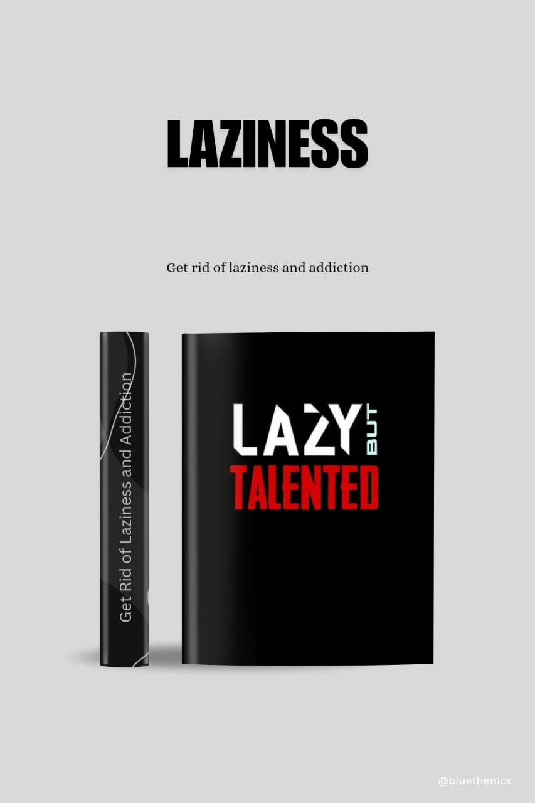

This book helps you to get away from the lazyness that have been foging your mind and keeping you away from your success. By reading this book you whould know to the technique to overcome your lazyness amd also allow you overcome your addictions. It will have a great impact on your journey to success. When you are trying to improve yourself you should first get away from the addictions and lazyness because its will make your progress less and you whould have a deep regret hanging around your hreat read this book and take a step towards to success.